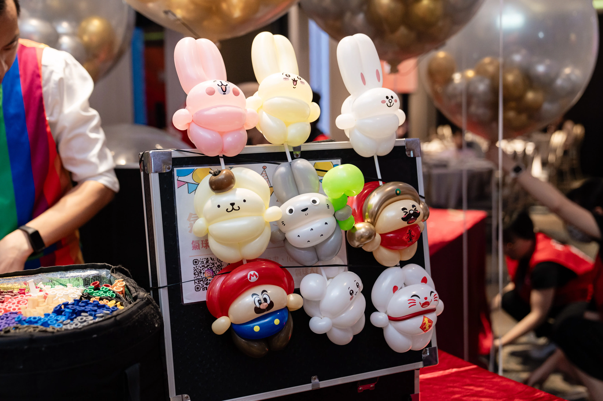
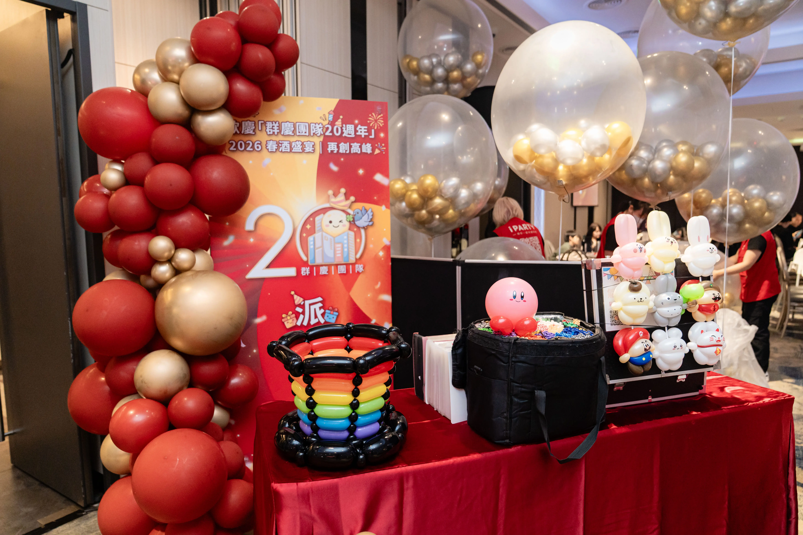
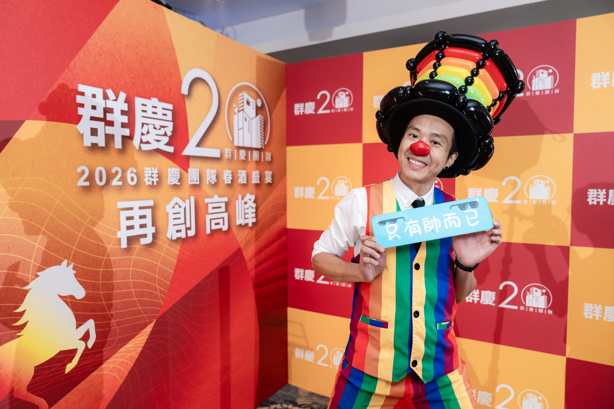
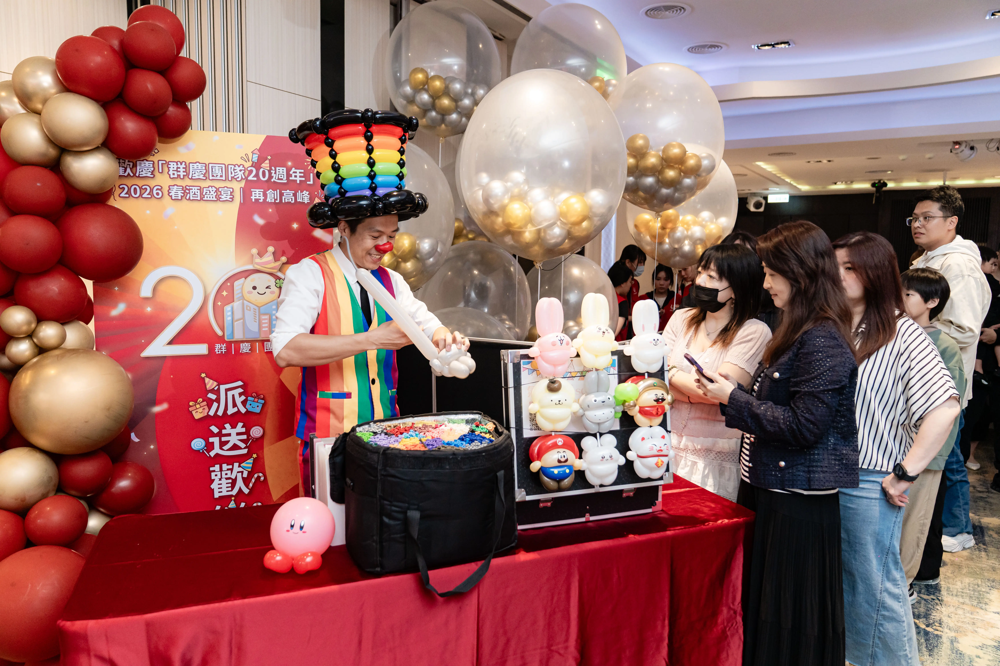

林口春酒折氣球活動案例｜永慶不動產群慶團隊20周年造型氣球區佈置與定點派送
紅金盛宴尊榮致敬！氣球大叔 Sony 團隊打造高秩序、高人氣的二十週年慶典專區
| 永慶不動產群慶團隊 20 周年春酒造型氣球區摘要 | |
|---|---|
| 活動日期 | 2026 年 5 月 8 日 |
| 活動地點 | 新北市林口區好日子海鮮餐廳（湖南里文化一路二段131號） |
| 服務項目 | 專屬造型氣球區背板設計與佈置、現場定點手折造型氣球高人氣派送服務 |
| 視覺亮點 | 永慶經典黃色融合尊榮紅金色系流線氣球牆、20周年主題背板拍照特區 |
| 服務團隊 | 氣球大叔 Sony 團隊 |
2026 年 5 月 8 日，氣球大叔 Sony 團隊受邀來到新北市林口區知名的 好日子海鮮餐廳，參與 永慶不動產群慶團隊 20 周年春酒盛宴與週年慶餐敘。企業在舉辦二十週年這類重大里程碑慶典時，承辦人往往希望將會場視覺集中，並維持高規格的公務餐敘秩序，確保既有熱鬧氣氛又不會打擾到賓客用餐。
這次我們並非承包全場整間餐廳的硬體，而是精準針對會場內的「造型氣球區」進行專屬的紅金背板與氣球佈置，並由大叔在該專區進行定點造型氣球派送。這種做法既能營造尊榮體面的打卡焦點，又能確保活動主流程與用餐動線流暢，對我們來說是非常珍貴且具備高專業信賴度的施作經驗。

房仲團隊二十週年盛宴，為何更看重「高秩序感」的專區規劃？
大團隊在舉辦春酒週年慶時，越來越傾向於規劃特定主題的「互動特區」。與傳統主動走進桌席、容易打擾賓客用餐或打斷長官敬酒流程的沿桌折氣球不同，定點派送是由想要造型氣球的同仁與眷屬主動前來專區排隊。
配合開席前報到、中場休息與餐敘進度，大叔固定在紅金背板前的專區就位。對於重視流程控管與品牌形象的房仲團隊而言，這類高秩序互動形式能有效兼顧現場熱度與商務餐敘品質。這也成為我們團隊在協助大型企業餐會規劃時，最具核心價值的服務指標。

紅金綻放！為群慶團隊客製的造型氣球區背板與美學細節
本次佈置完全聚焦於群慶團隊 20 周年的專屬造型氣球區。大叔與團隊精心選用象徵熱情與吉慶的經典紅色大背板，金色的「20 周年」與「群慶團隊春酒宴」立體字在燈光照射下更顯尊榮。我們圍繞著背板上方與側邊，運用高品質金色、紅色以及永慶品牌經典黃色的佈置氣球，編織出帶有流線躍動感的 有機不規則氣球牆。
同時，我們在該專區與舞台兩側，也建置了同色系的對稱式不規則氣球柱。精緻、時尚且局部集中的視覺設計，讓每位到場排隊的經紀人與貴賓同仁都能在最完美的紅金美學背景前留影，成功襯托出企業二十週年的非凡品牌形象。

職人手法與商務高配合度，細緻落實每一處環節
除了該區域紅金視覺佈置外，本次活動的最核心靈魂便是大叔帶來的 造型氣球區定點手折派送服務。大叔頭戴巨型彩虹氣球帽、頂著招牌小丑紅鼻子，身穿筆挺繽紛的彩虹西裝背心就位。大叔以極快且純熟的職人手法，現場將長條氣球變出精緻可愛的卡通玩偶，送到每一位前來排隊的企業同仁手中。
大叔團隊不僅注重表演的流暢與吸睛度，更深知商務活動的嚴謹。不論是在施工時嚴格注意林口好日子餐廳通道的安全配重，還是在活動結束後提供完整的專區撤收服務，我們將一站式春酒服務的技術規格標準化，讓承辦人完全免除後顧之憂。

🏆 為什麼大型企業、房仲大團隊指名選擇「氣球大叔 Sony」專區一站式服務？（E-E-A-T 品牌信任）
- 高秩序的定點互動規劃：堅持採用定點專區排隊派送形式，既能為會場匯聚超高人氣與打卡亮點，又完美尊重貴賓用餐空間與活動主流程。
- 高雅時尚的局部審美：摒棄低階老舊的傳統氣球編織，專注於造型氣球區的紅金漸層不規則氣球牆流線美學，完美襯托企業二十週年的形象。
- 成熟專業的 B2B 商務配合：熟悉大型機構與各大企業合約簽核流程，報價單明細清晰公開，且施作高效率、專區撤場認真負責，讓承辦人完全免除後顧之憂。
案例總結：用局部紅金設計與定點派送，為二十週年餐敘留下高質感回憶
這次在林口好日子餐廳的永慶不動產群慶團隊 20 周年春酒盛宴，無論是造型氣球區那面大氣非凡的紅金背板，還是專區前排隊同仁與眷屬拿到手折造型氣球時驚喜、放鬆的開懷神情，都成為大叔團隊今年五月非常驕傲的一份實績紀錄。好的服務，就是能在最對的地點，用最高秩序的方式帶給全場歡笑。謝謝永慶不動產群慶團隊承辦人的信任與完美配合，祝福群慶團隊業績長紅、邁向下一個輝煌的二十年！我們下次舞台見！
💡 林口企業春酒尾牙佈置常見問題
- Q: 春酒宴席的流程安排很緊湊，氣球定點互動專區什麼時間點開始派送最合適？
- A: 一般最建議安排在「賓客陸續進場報到」以及「開席前半小時」。這個時段長官尚未致詞、台上節目也還沒啟動，定點派送能作為絕佳的迎賓熱場點。另外在中場休息、敬酒之後也是很好的空檔，能讓現場維持熱絡感，又完全不會與主舞台的頒獎、表揚流程衝突。
- Q: 餐廳會場空間比較有限，這樣還適合單獨做一個造型氣球區嗎？
- A: 非常適合。這正是「局部專區佈置」的核心優勢。大叔團隊會依據林口好日子餐廳或其他宴會廳的現場角落形狀，精準調整大圖背板與鐵架配重。我們不佔用走道主動線，而是將視覺焦點集中在局部的一面牆。這樣既能騰出體面的拍照空間，又能與整間餐廳的原有擺設完美融合。
- Q: 現場排隊領造型氣球的人潮，會不會造成現場混亂、甚至打擾到長官用餐敬酒？
- A: 這正是我們堅持「定點手折專區」而非沿桌折氣球的原因。定點派送會請想要氣球的同仁或眷屬依序排隊，大叔團隊也會有專人引導動線，將人龍整齊地控制在拍照背板區的一側。這樣能將對用餐區的干擾降到最低，確保企業長官敬酒與賓客用餐時的商務隱私與秩序感。
- Q: 預約林口或桃園地區的企業週年餐敘定點服務，通常需要多久前接洽？
- A: 每逢年初、五月企業週年慶典以及年末餐敘，皆是極為熱門的施作時間。為了確保專區背板設計的精緻度與客製立體字的備料完整，建議主辦單位提前約 1 至 2 個月與我們啟動討論。您可以點擊下方的預約按鈕，我們將提供您公開透明的明細報價單以供內部簽核。
- Q: 活動圓滿結束後，造型氣球區的專屬背板與佈置殘骸需要主辦單位自行清理嗎？
- A: 我們提供完整的商務撤場配合。不論是在新北林口、新莊、中壢或雙北各大飯店餐廳，活動圓滿結束後，皆會由我們的專業團隊依照約定時間到現場進行專區撤收、垃圾清運與架體回收，承辦人完全無需擔心現場的善後問題。
🎈 正在規劃大廠、房仲團隊或公司企業的週年慶與春酒尾牙嗎？
無論是企業春酒、週年慶餐敘、房仲團隊聚會，或大型宴會餐廳的互動專區需求，氣球大叔 Sony 團隊都能提供兼具視覺與秩序感的專業規劃。歡迎與我們專人啟動檔期預算與專區設計討論。
- 視覺設計傳送門：歡迎參考我們的 頂級造型氣球與會場佈置服務 核心主頁。
- 舞台演出傳送門：想要更驚奇的魔幻效果？快去看看 精采魔術互動秀服務。
- 熱門檔期卡位：春秋兩季與年末為企業餐敘極熱門檔期，歡迎點擊下方按鈕提前啟動預算與視覺溝通。
📅 本文紀錄於 2026-05-08，由氣球大叔 Sony 團隊親自撰寫分享新北林口好日子餐廳精彩造型氣球專區案例。